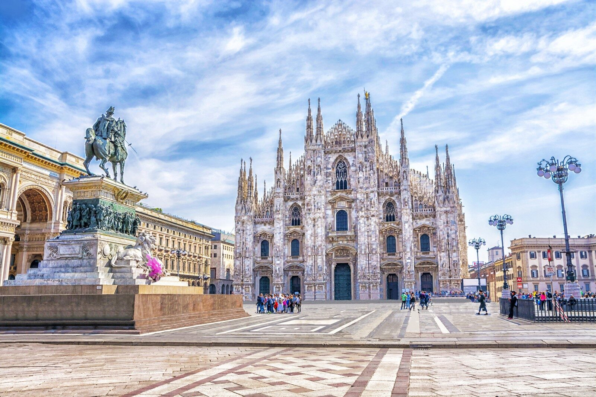
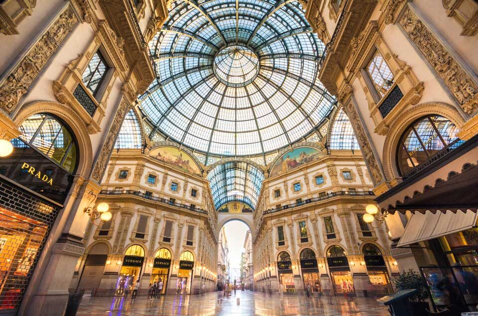
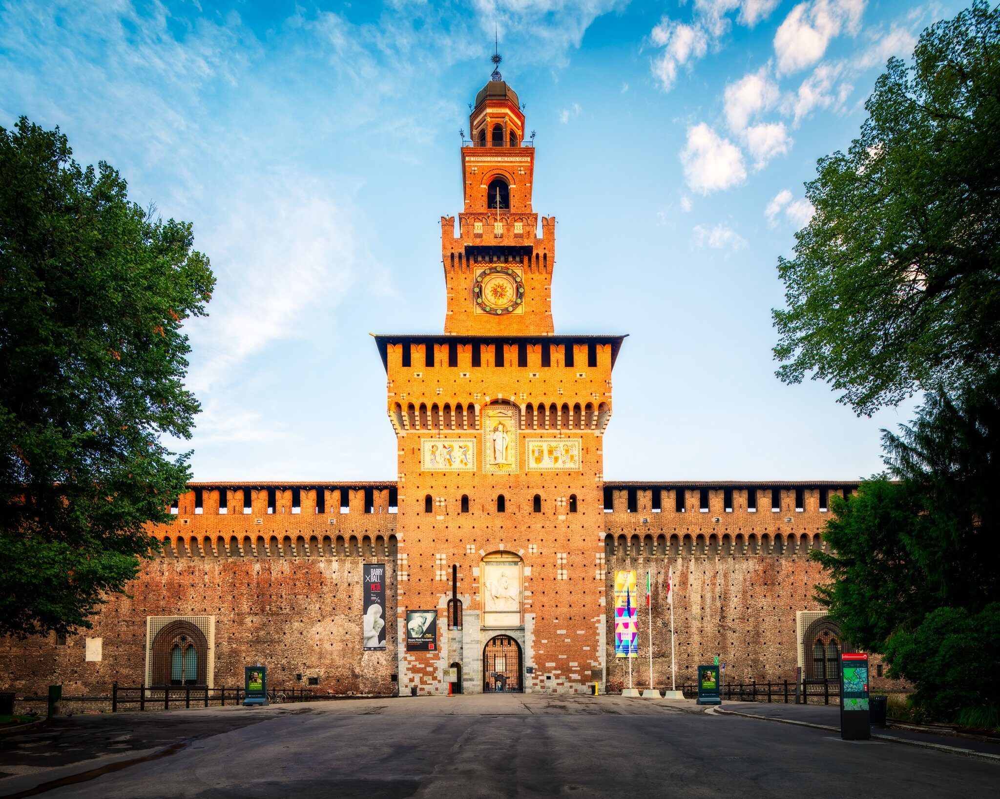
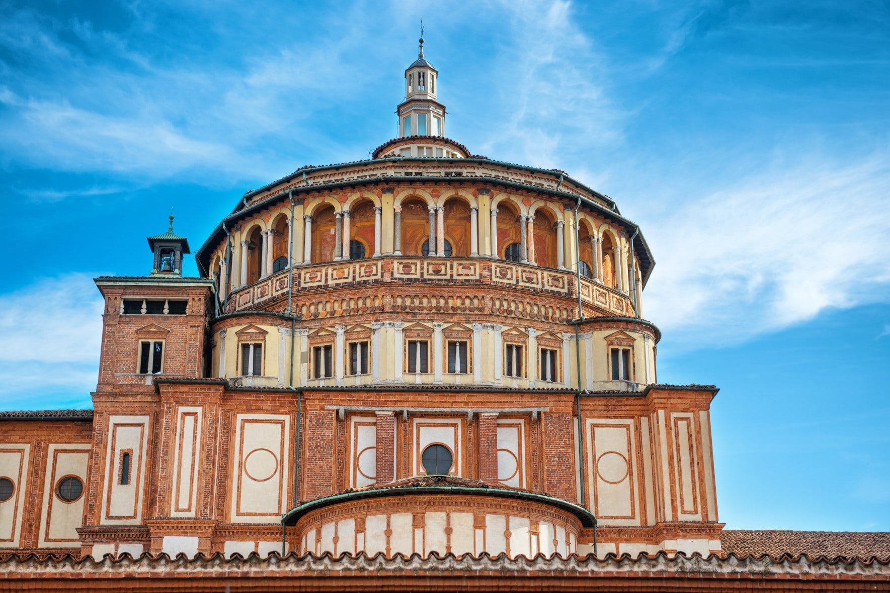
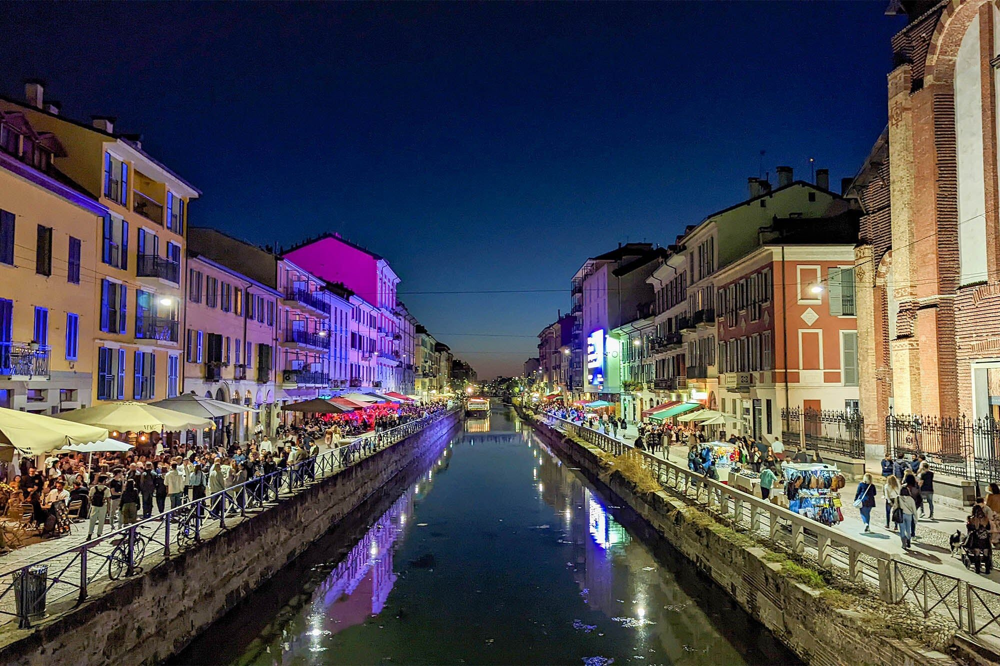
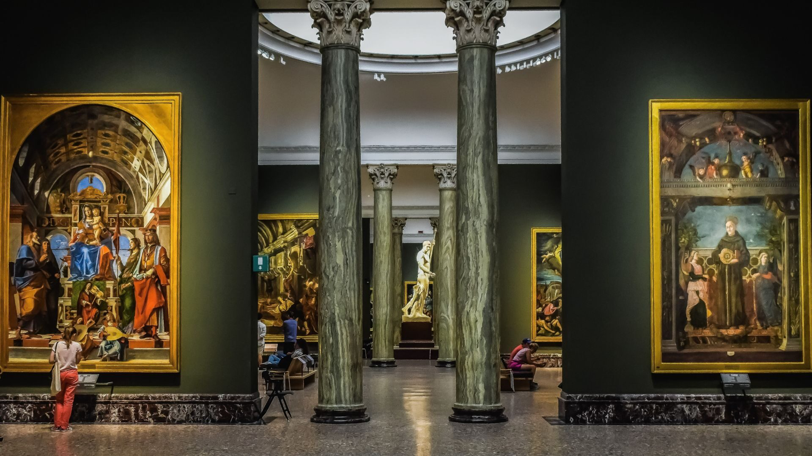

MILAN EXPLORER
MILAN EXPLORER
Milan's Must-See Attractions

Duomo di Milano
Milan's breathtaking centrepiece, the Duomo, is a masterpiece of Gothic architecture that took nearly six centuries to complete. Look out for its intricate spires, detailed statues, and stunning stained glass windows. Don't miss the opportunity to walk on the rooftop terraces for unforgettable panoramic views of the city.
It's the largest church in Italy and an absolute must-see.

Galleria Vittorio Emanuele II
Right next to the Duomo, step into one of the world's oldest and most glamorous shopping malls. The Galleria is renowned for its stunning glass-vaulted arcades, intricate mosaics (including the famous Turin bull), and high-end boutiques like Prada, Gucci and Louis Vuitton.
Even if you're just window shopping, the architecture itself is worth the visit.

Castello Sforzesco
Once a powerful fortress for Milan's ruling families, Sforzesco Castle is now a cultural hub housing several museums and art collections. Explore its grand courtyards and discover treasures including Michelangelo's final, unfinished sculpture, the Rondanini Pietà, and works by Leonardo da Vinci.
Behind the castle lies Parco Sempione, a large park perfect for a relaxing stroll.

The Last Supper (Santa Maria delle Grazie)
Head to the Convent of Santa Maria delle Grazie to view Leonardo da Vinci's incredibly famous painting, 'The Last Supper'. The well-known mural shows the moment Jesus tells his apostles that one of them is going to betray him.
Important: Viewing is strictly limited and tickets must be booked months in advance.

Navigli District
Experience Milan's vibrant nightlife in the Navigli district, centred around the city's historic canals (Naviglio Grande and Naviglio Pavese). Once vital waterways, they are now lined with bustling bars, restaurants, unique shops, and art galleries.
It's the perfect place to enjoy the Milanese tradition of aperitivo as the sun sets.

Pinacoteca di Brera
Located in the charming Brera district, this is Milan's main public gallery for paintings. The Pinacoteca di Brera houses a world-class collection of Italian art, particularly masterpieces from the Venetian and Lombard schools, including works by Raphael, Caravaggio, Bellini, and Mantegna.
The surrounding Brera neighbourhood is also delightful to explore with its cobbled streets and artistic atmosphere.